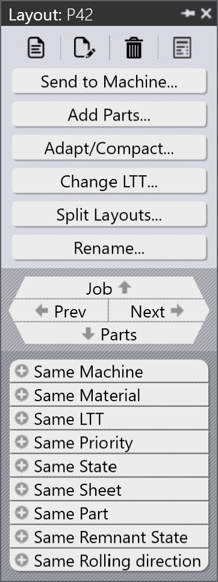

Πίνακας διάταξης
Αυτή η ενότητα εξηγεί ενέργειες σχετικές με τη διάταξη όπως Send to machine, Recall from machine, Export outputs, Mark complete, Add parts…, Adapt/Compact…, Split layout και άλλες επιλογές που χρησιμοποιούνται για τη διαχείριση στιγμιοτύπων διάταξης.
 |
|
Send to machine
-
Όταν μια κατανομή είναι έτοιμη (πλήρης ή απαιτείται επειγόντως), μπορείτε να την αποστείλετε στη μηχανή.
-
Κάντε δεξί κλικ στην κατανομή και επιλέξτε Send to machine….
-
Δημιουργείται αυτόματα ένας φάκελος, ονομασμένος με βάση την κατανομή.
-
Τα αρχεία εξόδου (fxlyt, NC, report, csv) εξάγονται στην τοποθεσία εξόδου της ΕΡΓΑΣΙΑΣ.
-
Οι κατανομές που αποστέλλονται στη μηχανή εμφανίζονται με μπλε σημάδι επιλογής.
| Μόλις απελευθερωθούν, αυτές οι κατανομές δεν επανεξετάζονται για επανασυσκευασία. |
Recall from machine
-
Εάν η έξοδος χρειάζεται επαλήθευση ή ενημέρωση (για παράδειγμα, προσθήκη περισσότερων εξαρτημάτων):
-
Κάντε δεξί κλικ στην εξαγόμενη διάταξη.
-
Επιλέξτε Recall from machine….
-
-
Τα αρχεία εξόδου και ο φάκελος (fxlyt, NC, report, csv) διαγράφονται.
-
Η κατανομή γίνεται ξανά επεξεργάσιμη.
-
Μπορείτε να κάνετε αλλαγές και να την αποστείλετε ξανά στη μηχανή.
Export outputs
-
Κάντε δεξί κλικ σε οποιαδήποτε διάταξη (κατανομή) που έχει αποσταλεί στη μηχανή και κάντε κλικ στο Export outputs.
-
Η επιλογή Export Outputs εξάγει τα αρχεία NC, Report και Layout στους αντίστοιχους φακέλους εξόδου μηχανής.
-
Αυτή η επιλογή αναδημιουργεί το αρχείο NC με τις τρέχουσες ρυθμίσεις μονάδων για τη διάταξη.
| Το Export Outputs δεν είναι διαθέσιμο για διατάξεις που είναι Ολοκληρωμένες και διατάξεις που αναμένουν στην ουρά για επανασυσκευασία. |
Σημαδεμός ως ολοκληρωμένο
-
Αφού η κατανομή επεξεργαστεί στη μηχανή, κάντε δεξί κλικ στην κατανομή και επιλέξτε Mark complete….
-
Μπορείτε να επιλέξετε πολλαπλές κατανομές και να τις σημαδέψετε ως ολοκληρωμένες ταυτόχρονα.
-
Όταν μια κατανομή σημαδεύεται ως ολοκληρωμένη:
-
Αποχρωματίζεται, μετακινείται στο τέλος της λίστας και εμφανίζεται με πράσινο σημάδι επιλογής.
-
Η διάταξη αφαιρείται από τη λίστα ενεργών διατάξεων.
-
Οι καταστάσεις εξαρτήματος και εργασίας ενημερώνονται και οι επεξεργασμένες ποσότητες μεταβαίνουν στην ολοκληρωμένη κατάσταση.
-
Τα αρχεία εξόδου για αυτή τη διάταξη αφαιρούνται από την τοποθεσία εξόδου μηχανής για να αποφευχθεί η διπλή χρήση.
-
Add parts…

-
Χρησιμοποιήστε αυτήν την επιλογή για να προσθέσετε περισσότερα εξαρτήματα σε μια σχετικά κακώς συσκευασμένη διάταξη. Όπως και η Διαδραστική κατανομή, αυτή είναι μια επιλογή καθοδηγούμενη από οδηγό και μπορεί να χρησιμοποιηθεί σε μία ή πολλαπλές διατάξεις ταυτόχρονα.
-
Το TruSmartCAM προσαρτά τον οδηγό επανασυσκευασίας διάταξης στην κύρια περιοχή εργασίας όταν χρησιμοποιείται αυτή η επιλογή. Κρατήστε πατημένο το πλήκτρο Ctrl και επιλέξτε ένα ή περισσότερα εξαρτήματα προς συσκευασία στις διατάξεις και πατήστε Next.

-
Τα επιλεγμένα εξαρτήματα εμφανίζονται στο επόμενο βήμα με μια επεξεργάσιμη στήλη ποσότητας. Ενημερώστε τις ποσότητες εξαρτημάτων εάν χρειάζεται στο πεδίο Update Qty. Κάντε κλικ στο Next για να προχωρήσετε στην κατανομή. Σημειώστε ότι οι ποσότητες μπορούν μόνο να αυξηθούν, όχι να μειωθούν.
-
Όλες οι διατάξεις κατανέμονται ξεχωριστά και τα αποτελέσματα κατανομής εμφανίζονται με τα νέα συσκευασμένα εξαρτήματα τοποθετημένα σε αυτά. Η επιλογή της διάταξης εμφανίζει όλα τα υπάρχοντα εξαρτήματα της διάταξης. Το αποτέλεσμα απορρίπτεται αυτόματα εάν δεν τοποθετηθεί νέο εξάρτημα κατά την επανασυσκευασία. Μια διάταξη με πολλαπλά αντίγραφα μπορεί να προκύψει σε διαφορετικά μοτίβα μετά την επανασυσκευασία.
Adapt/Compact…
-
Αυτή η εντολή που βασίζεται σε οδηγό μπορεί να χρησιμοποιηθεί για να προσαρμόσει μια διάταξη από μια μηχανή σε άλλη όταν η αρχική μηχανή είναι εκτός λειτουργίας ή όταν πρέπει να εξισορροπηθεί το φορτίο εργασίας της μηχανής.

-
Μπορεί να χρησιμοποιηθεί όταν η μεταλλική πλάκα που σχεδιάστηκε εξαντληθεί και η διάταξη πρέπει να επανασχεδιαστεί σε άλλη διαθέσιμη μεταλλική πλάκα.
-
Μπορείτε να συγχωνεύσετε διατάξεις συσκευασμένες σε μικρότερες μεταλλικές πλάκες σε μεγαλύτερες μεταλλικές πλάκες για πιο αποδοτική χρήση του υλικού.
-
Μπορείτε να διαχωρίσετε διατάξεις συσκευασμένες σε μεγαλύτερες μεταλλικές πλάκες σε μικρότερες μεταλλικές πλάκες εάν δεν είναι διαθέσιμα αποθέματα μεγάλων μεταλλικών πλακών.
-
Μπορείτε να βελτιώσετε την αποδοτικότητα συσκευασίας πολλαπλών διατάξεων (ακόμη και από διαφορετικές μηχανές) συγχωνεύοντάς τις μαζί.
-
Για να την χρησιμοποιήσετε, επιλέξτε μία ή περισσότερες διατάξεις και κάντε κλικ στο Adapt/Compact… για να ανοίξετε τον οδηγό στην περιοχή εργασίας.

-
Το αριστερό τμήμα εμφανίζει όλες τις επιλεγμένες διατάξεις και το τμήμα Εξαρτημάτων εμφανίζει τα εξαρτήματα της διάταξης.
-
Επιλέξτε τη μηχανή-στόχο και το υλικό μεταλλικής πλάκας, και έπειτα κάντε κλικ στο next για να εκτελέσετε την επανακατανομή.
-
Τα νέα αποτελέσματα κατανομής εμφανίζονται στο τμήμα αποτελεσμάτων.
-
Κάντε κλικ στο next για να αποθηκεύσετε την προσαρμοσμένη ή συμπυκνωμένη διάταξη.

Διαχωρισμός μιας διάταξης
Η επιλογή Split layouts… σας επιτρέπει να διαχωρίσετε μια υπάρχουσα διάταξη σε πολλαπλές διατάξεις τροποποιώντας τις ποσότητες, χωρίς να χρειάζεται να επαναλάβετε τον εξοπλισμό ή την κατανομή.
Αυτή η λειτουργία είναι ιδιαίτερα χρήσιμη στα ακόλουθα σενάρια:
-
Όταν χρειάζεται να παράγετε μέρος της συνολικής ποσότητας άμεσα ενώ προγραμματίζετε την υπόλοιπη ποσότητα για μεταγενέστερη παραγωγή.
-
Όταν οι απαιτήσεις παραγωγής πρέπει να κατανεμηθούν σε πολλαπλές βάρδιες ή ημέρες για τη βελτιστοποίηση της ροής εργασίας και της αξιοποίησης πόρων.
-
Όταν μια συγκεκριμένη μηχανή είναι προσωρινά μη διαθέσιμη ή κατειλημμένη και χρειάζεται να προσαρμόσετε τη διάταξη για να ανταποκριθείτε στους τρέχοντες περιορισμούς παραγωγής.
Για να διαχωρίσετε μια διάταξη, εκτελέστε τα ακόλουθα βήματα:
-
Στην προβολή Διατάξεων, επιλέξτε την απαιτούμενη διάταξη.

-
Κάντε κλικ στο Split layouts….
-
Εισαγάγετε την απαιτούμενη τιμή στο New Copies.

-
Κάντε κλικ στο OK.

Η επιλεγμένη διάταξη διαχωρίζεται τώρα σε δύο διατάξεις με προσαρμοσμένες ποσότητες.